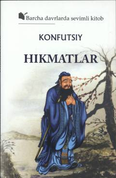

HKonfutsiyning hayot va falsafaga doir donishmandona hikmatlar to'plami.
Bu kitob buyuk xitoy faylasufi Konfutsiyning hikmatlarini o'z ichiga oladi. Hikmatlar o'zining soddaligi, hayotiyligi va samimiyligi bilan ajralib turadi hamda insonni chuqur o'ylashga undaydi. Asar rus tilidan Komiljon va Oybek Jo'rayevlar tomonidan tarjima qilingan.